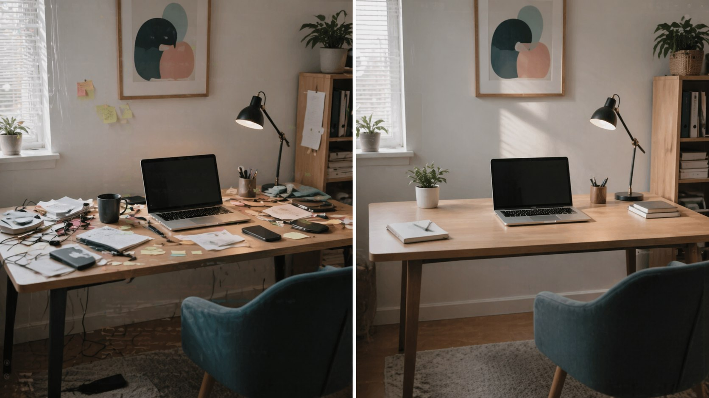
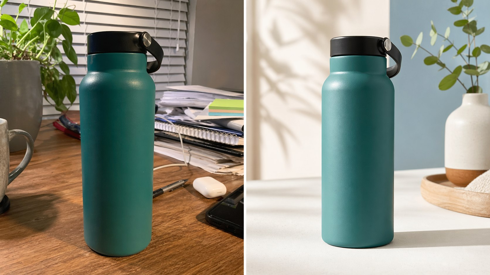

ChatGPT image editing / prompts
ChatGPT Image Editing Prompts: 20 Copy-and-Paste Examples
Image editing with ChatGPT works best when you are clear about what must change and what must stay the same. These prompts are simple starting points for cleaning up photos, improving graphics, changing backgrounds, and making images more useful for work.
Quick Answer
A strong ChatGPT image editing prompt says what to change, what to keep, what style to match, and what to avoid. Do not just say "make this better." Say exactly which part needs fixing.
The example images in this guide were generated for this article. They are not private user photos, and they are not meant to pretend that one real upload was edited step by step. They show the kind of before-and-after result these prompts are aiming for.
Simple Editing Prompt Formula
Edit this image. Change only [specific part]. Keep [important parts] the same. Match the same lighting, camera angle, shadows, and style. Avoid [things you do not want].
How to Prompt ChatGPT for Image Editing
The easiest mistake is asking for a big vague improvement. If you upload an image and say "make this professional," ChatGPT has to guess what professional means. It may change too much, remove useful details, or add things you did not ask for.
A better image editing prompt gives boundaries. Think like this: "change the background, keep the product, keep the camera angle, improve the lighting, and do not add text." That tells the tool what matters.
Say the target
Tell it if the image is for a blog, product page, social post, poster, ad, or presentation.
Protect key parts
Name what must stay the same, such as the person, product shape, room layout, label, or colors.
Limit the edit
Ask for one main change at a time instead of ten changes in one prompt.
Check the result
Look carefully at text, faces, hands, logos, labels, numbers, and anything factual.
Photo Cleanup Prompts
Use these when the image is already close, but it needs to look cleaner, calmer, or more polished.

1. Clean Up a Messy Background
Edit this photo to make the background cleaner and less distracting. Keep the main subject exactly the same. Remove small clutter, keep realistic lighting, and do not make the image look artificial.
2. Improve Lighting
Improve the lighting in this image. Make it brighter, clearer, and more natural. Keep the same camera angle, colors, and subject. Do not over-sharpen or make it look like a filter.
3. Make a Desk Photo Look Professional
Edit this desk photo into a clean professional workspace image. Keep the desk, laptop, and main objects in the same position. Reduce clutter, improve lighting, and make the scene feel calm and practical.
4. Fix a Cropped or Awkward Composition
Reframe this image so it feels more balanced. Keep the subject and style the same. Add a little clean space around the edges if needed, and avoid adding new objects or fake text.
Product and Business Image Prompts
These prompts are useful for small business owners, creators, bloggers, and anyone who needs cleaner visual drafts for work.

5. Improve a Product Photo
Edit this product photo to look cleaner for an online store. Keep the product shape, color, and label the same. Improve lighting, shadows, and background neatness. Do not change the product design.
6. Change the Product Background
Change only the background to a clean studio surface. Keep the product exactly the same, including the label, shape, color, and angle. Match realistic shadows so it still looks like a real photo.
7. Make a Service Image Less Stock-Like
Edit this image so it feels more natural and less like a generic stock photo. Keep the main idea, but make the scene warmer, simpler, and more believable. Avoid fake smiles, clutter, and overly polished lighting.
8. Create a Cleaner Ad Draft
Improve this ad image for a small business. Make the layout cleaner, reduce visual clutter, and leave clear space for a headline. Keep the main product and brand colors the same. Do not add extra claims or unreadable text.
Design, Social, and Website Prompts
ChatGPT image editing can help turn a rough visual into something easier to use, especially for blog images, social posts, simple posters, and presentation graphics.
9. Make a Blog Hero Image Cleaner
Edit this image for use as a blog hero. Keep the main subject, but simplify the background and leave clean space near the top left for a headline. Avoid logos, fake text, and busy details.
10. Improve a Social Media Graphic
Make this social media graphic easier to read. Improve spacing, contrast, and visual hierarchy. Keep the same message and main colors. Remove unnecessary decoration and avoid adding new text.
11. Fix a Poster Layout
Clean up this poster layout. Make the title area clearer, reduce clutter, and organize the design into a simple top-to-bottom flow. Keep the same topic and visual style.
12. Turn a Rough Idea Into a Presentation Visual
Edit this image so it works as a presentation slide visual. Make it clean, simple, and easy to understand from a distance. Keep only the most important objects and remove distracting details.
Specific Edit Prompts
The more specific the edit, the easier it is to judge whether the result worked. These prompts are good when you want one clear change.
13. Remove an Object
Remove [object] from this image. Fill the area naturally so it matches the surrounding background, lighting, and texture. Do not change the rest of the image.
14. Replace the Sky or Background Area
Change only the sky/background to [new description]. Keep the subject, foreground, camera angle, and lighting consistent. Make the edit look natural, not dramatic.
15. Keep the Person, Change the Setting
Keep the person exactly the same, including face, pose, clothing, and expression. Change only the background to [new setting]. Match the lighting and perspective.
16. Make an Image Match a Brand Color
Edit this image so the overall color palette matches [brand colors]. Keep the subject realistic and avoid changing important details. Do not add logos or text.
17. Create a Consistent Style
Restyle this image as [style], but keep the same subject, composition, and main colors. Make it feel like a clean, finished visual for [website/social/presentation].
18. Make Text More Readable
Improve the readability of the text in this image. Keep the same words, but make the spacing, contrast, and layout cleaner. Do not change the message or add extra text.
19. Make It Less AI-Looking
Edit this image so it looks more natural and less AI-generated. Reduce strange textures, over-smooth surfaces, fake lighting, and unrealistic details. Keep the main idea and composition the same.
20. Final Polish Before Publishing
Polish this image for publishing. Make it cleaner, sharper, and easier to scan. Remove small distractions, fix awkward spacing, and keep the subject and overall style the same.
What to Check Before Publishing
Image editing tools can save time, but they still make mistakes. Before using an edited image on a website, product page, ad, or social post, check it slowly.
Text
Look for misspelled words, changed labels, odd letters, and tiny unreadable text.
Identity
If a person is in the image, check the face, hands, clothing, and expression carefully.
Product details
Make sure the product shape, label, price, size, and color did not accidentally change.
Permission
Only upload images you own, have permission to edit, or are allowed to use.
FAQ
Can ChatGPT edit images from a prompt?
Yes, when image tools are available in your ChatGPT account. You can upload an image and ask for specific edits, or ask ChatGPT to create a new image from a text prompt.
What is the best prompt for editing an image?
The best prompt is specific: say what to change, what to keep, what style to match, and what to avoid. One clear edit usually works better than a long list of unrelated changes.
Can ChatGPT fix bad text inside an image?
It can often improve text, but you should check every word before publishing. Text rendering is better than older image tools, but mistakes can still happen.
Should I upload private images?
Avoid uploading private customer data, confidential business images, sensitive documents, or photos of people if you do not have permission to use them.
Read Next
Sources Checked
This guide was written as practical prompt advice and checked against current official OpenAI pages on 23 April 2026.